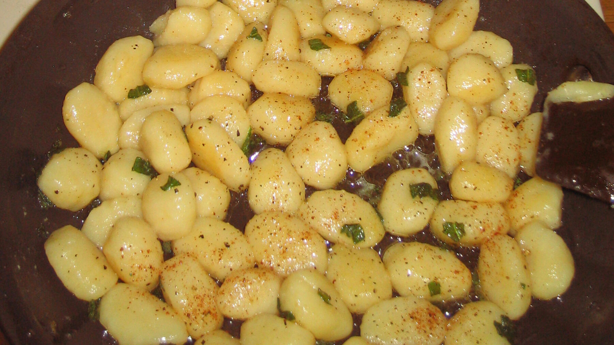

Zurück zur Übersicht
Gnocchi in Salbeibutter
Selbstgemachte Kartoffel-Gnocchi mit Hartweizengrieß, in Nussbutter mit frischem Salbei geschwenkt.
- Zeit
- 55 Min.
- Schwierigkeit
- mittel
- Kategorie
- Pasta
- Ernährung
- vegetarisch
Zutaten
Portionen
Für die Gnocchi
- 0,5 kgVorwiegend festkochende Kartoffeln
- 50 gHartweizengrieß
- ½ PriseSalz
- 250 gMehl
- Mehl zum Bearbeiten
- Salzwasser
Für die Salbeibutter
- 75 gButter
- ½ HandvollSalbei
- Salz und Pfeffer
Zubereitung
- Kartoffeln kochen und schälen. Mit dem Grieß, einer Prise Salz und einem Teil des Mehls zu einem Teig stampfen. Das geht am leichtesten in einer Schüssel mit flachem Boden. Restliches Mehl dazugeben, gern auch mit den Händen kneten.
- Den Teig auf der Arbeitsfläche weiterkneten, bis er möglichst glatt ist. Klebt er noch an den Händen, etwas Mehl einarbeiten.
- Den Teig vierteln und daraus daumendicke Rollen formen. Mit einer Palette Stücke abschneiden und mit Mehl bestäuben, damit sie nicht aneinanderkleben.
- Die Gnocchi mit einer Schaumkelle in siedendes Wasser geben und eine große Prise Salz dazugeben. Das Wasser darf nicht sprudelnd kochen, sonst zerfallen sie. Sie sind fertig, wenn sie an die Oberfläche steigen.
- Für die Salbeibutter die Butter schmelzen und leicht bräunen, bis Nussbutter entsteht. Den Salbei hacken, dazugeben und mit Salz und Pfeffer würzen.
- Gnocchi abtropfen lassen, in die Butter geben und durchschwenken. Den Herd dabei schon ausschalten, damit die Gnocchi nicht weitergaren.